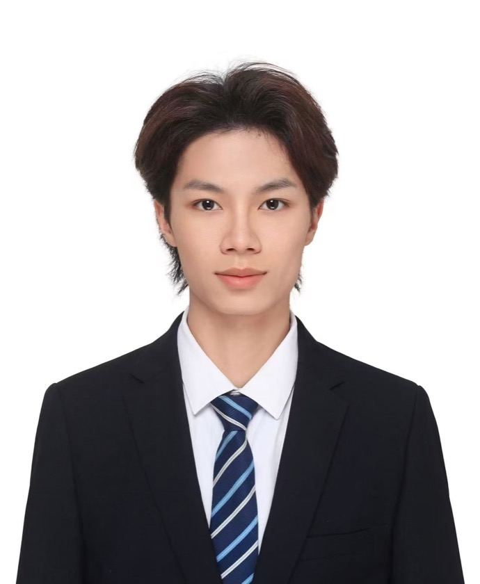

2026.09 - 至今
清华大学 · 博士研究生
清华大学深圳国际研究生院，鹏城国家实验室联合培养，研究方向：语音大语言模型。
清华大学深圳国际研究生院电子信息博士研究生，鹏城国家实验室联合培养，导师：吴志勇教授。 研究方向是：SpeechLLM（语音大语言模型）、Audio Codec（音频编解码器）、Audio-Driven 3D Facial Animation Generation（音频驱动的3D人脸动画生成）、Stero Image Compression（立体图像压缩）。

清华大学深圳国际研究生院，鹏城国家实验室联合培养，研究方向：语音大语言模型。
双学位试点项目，软件工程学士学位，工商管理辅修学位，两次获得国家奖学金。
共同第一作者。提出频域对齐模块与双向多参考熵模型，用于高效立体图像压缩。
语音算法工程师，负责语音大模型基模训练，参与 VoxCPM 模型训练与发布。
负责音频驱动 3D 数字人面部动画的模型训练与评测优化闭环，作为核心贡献者发布游戏《数字景德镇 · 瓷都小匠》，助力景德镇申遗成功。
研究音频编解码器、音频离散化与表征提取，搭建 DynamicCodec 实验平台。
研究立体图像压缩，完成 FreqSIC，以共同第一作者身份发表在 CVPR 2026（Highlight）。